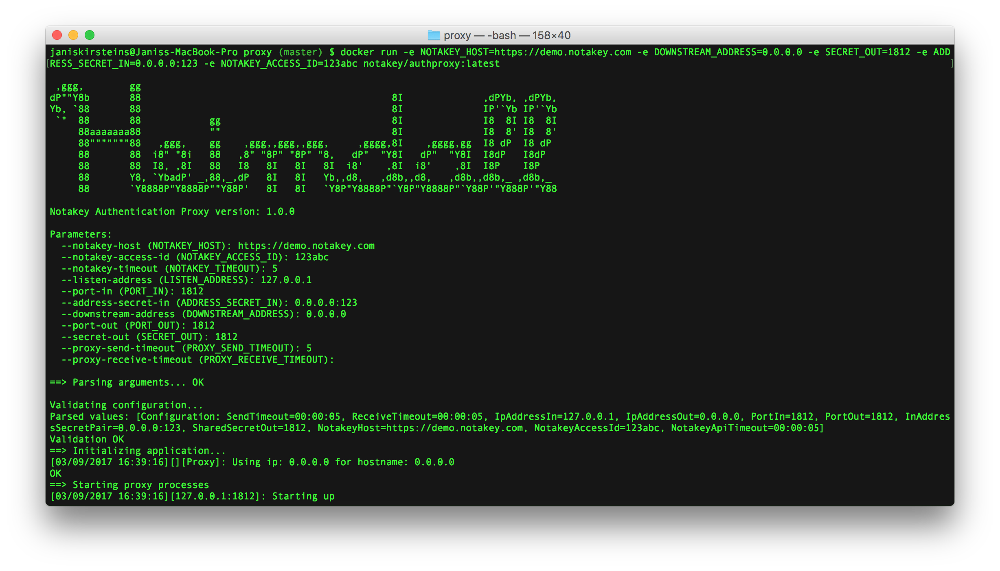

Introduction
The Notakey Credential Provider (NtkCp) is a Windows plugin, which extends the logon UI with a new mechanism, which injects Notakey 2FA in the normal logon scenario.
Technical Summary
NtkCp consists of 2 components:
- a Windows COM component, which implements the ICredentialProvider and ICredentialProviderCredential2 interfaces.
- a Windows service, which communicates with the credential provider via named pipes, and with a Notakey API endpoint.
The credential provider provides a username and password input fields. The provided username is sent to the Notakey API, to request approval on the user’s smartphone.
If the username is not found (i.e. the user does not exist or has not been onboarded on the Notakey server), the login attempt will fail with a message.
If the username is found, and the attempt is denied, the logon attempt will fail with an error.
If the user approves the logon attempt, then the provided username and password are processed as they would normally. If the entered password is incorrect, then the logon attempt will fail with a message.
Installation instructions (*.zip)
# The expected ZIP package contents
package.zip
├── NotakeyBGService
│ ├── winsw.exe
│ ├── winsw.xml
│ └── bin
│ └── Release
│ ├── *.dll
│ ├── *.xml
│ └── NotakeyBGService.exe
├── NotakeyNETProvider
│ └── bin
│ └── x64
│ └── Release
│ ├── *.dll
│ └── *.xml
├── register.bat
├── register.reg
└── unregister.bat
Place the contents of the package in the desired location (e.g. C:\ntkcp)
and then run register.bat as administrator.
This script will create a new system service (Notakey BG Service), and
register the credential provider in the registry.
To remove the provider from the system, run unregister.bat as the administrator.
32-bit systems
On 32-bit systems, the package should contain a register32.bat and unregister32.bat
file. These should be used to register the service and credential provider.
There are no other user-facing changes between 32-bit and 64-bit packages.
Configuring the API endpoint
After installation, the background service must be configured to connect to the desired Notakey API endpoint.
This is done by modifying the NotakeyBGService\winsw.xml file. This file should contain
three argument tags:
<argument>https://demo.notakey.com/api/</argument>
<argument>65af8d56-b7d9-49b9-86c6-595dc440d933</argument>
<argument>/unattended</argument>
- The first argument should be a Notakey API endpoint (without the version number) with a trailing slash.
- The second argument should be a Notakey application access ID value. This value can be found in the Notakey dashboard, when viewing a specific application.
- The third argument should be left
/unattended.
Network Connectivity
The background service will attempt to connect to its specified Notakey endpoint.
If the endpoint URL uses https://, then port 443 will be used. Otherwise,
the port 80 will be used.
There are no expected inbound connections.
Log files
The credential provider does not perform any logging.
However, the background service will create log files in the package’s
NotakeyBGService folder.
winsw.err.log
This file will contain information about errors.
winsw.out.log
This file will contain informational output without errors.
Status Messages
The logon UI will provide a status message, which reflects the status of the background service.
The status will be re-checked every 10 seconds. Upon failure, the status check interval will become progressively larger (exponential backoff).
Service Status: OK
This message means that the background service is operational, and accessible, and that the specified API endpoint is valid and reachable.
Service Status: health-check request timed out. Is the background service running?
This message means that the background service is not running, or there is a permission problem, which blocks the logon UI from communicating with it, using named pipes.
Double-check if the service is started, and if its identity is not restricted from using named pipes.
Service Status: service can not connect to API. Check network connectivity and API parameters.
The background service is operational, but the API endpoint is not reachable.
Double-check network connectivity, firewall rules and the API endpoint URL.
Service Status: API call timed out.
The background service is operational, and the API endpoint was reachable at some point, but not anymore.
Double-check network connectivity, and if the Notakey server can be reached.
Service Status: error (<error message>)
This is a generic error message for unexpected issues.
FAQ
Does NtkCp work with local users or domain users?
NtkCp works with both local and domain users. The entered username must match the username that has been onboarded in the Notakey Dashboard.
Can NtkCp be used in an environment that requires smartcard logon?
No, NtkCp is a proxy for the normal username/password logon method.
Can’t the users choose a different credential method, and sidestep Notakey authentication?
If other credential providers are enabled, the users will be able to use them and sidestep Notakey authentication.
To mitigate this, you can disable other credential providers.
Can users use safe mode to sidestep the Notakey credential provider?
Yes, in safe mode, the Notakey credential provider can be avoided. The system will fallback to the default system credential providers.
Can this be used to protect remote servers?
NtkCp can be used together with Remote Desktop Protocol (RDP).
Why is the Notakey logon option missing, when accessing a remote server via RDP?
If Network Level Authentication (NLA) is enabled, users will be prompted locally for either their smartcard, or their username/password credentials.
This is by design and can not be changed.
However, if other credential providers are disabled on the remote server, then after the initial authentication, a second logon UI will be presented, where the user will be able to use the Notakey credential provider.